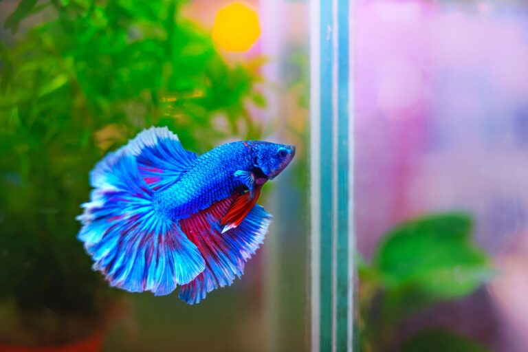

Wilkommen auf meiner Homepage
Ich sollte mich erstmal Vorstellen...
ich bin Daniel und wollte mal meine eigene Homepage
haben, deswegen schreibe ich gerade eine eige Homepage

Momentan werde ich mein Aquarium Betta freundlicher machen,
dass ich einen halten kann.
(hyperlink im Bild :) )
naja reicht au mal... Hier eines meiner lieblingsbilder von:
Onlinewahn!